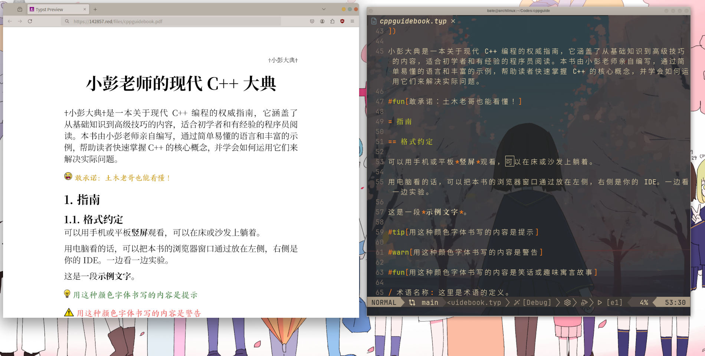

小彭老师现代 C++ 大典
小彭大典是一本关于现代 C++ 编程的权威指南，它涵盖了从基础知识到高级技巧的内容，适合初学者和有经验的程序员阅读。本书由小彭老师亲自编写，通过简单易懂的语言和丰富的示例，帮助读者快速掌握 C++ 的核心概念，并学会如何运用它们来解决实际问题。
前言
推荐用手机或平板竖屏观看，可以在床或沙发上躺着。
用电脑看的话，可以按 WIN + ←，把本书的浏览器窗口放在屏幕左侧，右侧是你的 IDE。一边看一边自己动手做实验。

可以按顺序阅读，也可以在本页面上方导航栏的“章节列表”中，选择感兴趣的章节阅读。
本书完全开源和免费，GitHub 仓库：https://github.com/parallel101/cppguidebook
如需离线查看，可以前往 GitHub Release 页面 下载 PDF 文件。
如果你在阅读过程中遇到任何问题，可以在 GitHub Issues 中提出，小彭老师会尽力解答。
也可以在 B 站 发私信给小彭老师哦。
本书还在持续更新中……要追番的话，可以在 GitHub 点一下右上角的 “Watch” 按钮，每当小彭老师提交新 commit，GitHub 会向你发送一封电子邮件，提醒你小彭老师更新了。
更新时间：BUILD_DATE_PLACEHOLDER
在 GitHub Pages 浏览本书 | 在小彭老师自己维护的镜像上浏览本书
格式约定
- 术语名称: 这里是术语的定义。
观前须知
与大多数现有教材不同的是，本课程将会采用“倒叙”的形式，从最新的 C++23 讲起！然后讲 C++20、C++17、C++14、C++11，慢慢讲到最原始的 C++98。
不用担心，越是现代的 C++，学起来反而更容易！反而古代 C++ 才又臭又长。
很多同学想当然地误以为 C++98 最简单，哼哧哼哧费老大劲从 C++98 开始学，才是错误的。
为了应付缺胳膊少腿的 C++98，人们发明了各种繁琐无谓的写法，在现代 C++ 中，早就已经被更简洁直观的写法替代了。
例如所谓的 safe-bool idiom，写起来又臭又长，C++11 引入一个 explicit 关键字直接就秒了。结果还有一批劳保教材大吹特吹 safe-bool idiom，吹得好像是个什么高大上的设计模式一样，不过是个应付 C++98 语言缺陷的蹩脚玩意。
就好比一个老外想要学习汉语，他首先肯定是从现代汉语学起！而不是上来就教他文言文。
当我们学习中文时，你肯定希望先学现代汉语，再学文言文，再学甲骨文，再学 brainf****k，而不是反过来。
对于 C++ 初学者也是如此：我们首先学会简单明了的，符合现代人思维的 C++23，再逐渐回到专为伺候“古代开发环境”的 C++98。
你的生产环境可能不允许用上 C++20 甚至 C++23 的新标准。
别担心，小彭老师教会你 C++23 的正常写法后，会讲解如何在 C++14、C++98 中写出同样的效果。
这样你学习的时候思路清晰，不用被繁琐的 C++98 “奇技淫巧”干扰，学起来事半功倍；但也“吃过见过”，知道古代 C++98 的应对策略。
举个例子
例如，在模板元编程中，要检测一个类型 T 是否拥有 foo() 这一成员函数。如果存在，才会调用。
在 C++20 中，可以使用很方便的 requires 语法，轻松检测一个表达式是否能合法通过编译。如果能，requires 语句会返回 true。然后用一个 if constexpr 进行编译期分支判断，即可实现检测到存在则调用。
template <class T>
void try_call_foo(T &t) {
if constexpr (requires { t.foo(); }) {
t.foo();
}
}
但仅仅是回到 C++17，没有 requires 语法，我们只能自己定义一个 trait 类，并运用烦人的 SFINAE 小技巧，检测表达式是否的合法，又臭又长。
template <class T, class = void>
struct has_foo {
static constexpr bool value = false;
};
template <class T>
struct has_foo<T, std::void_t<decltype(std::declval<T>().foo())>> {
static constexpr bool value = true;
};
template <class T>
void try_call_foo(T &t) {
if constexpr (has_foo<T>::value) {
t.foo();
}
}
如果回到 C++14，情况就更糟糕了！if constexpr 是 C++17 的特性，没有他，要实现编译期分支，我们就得用 enable_if_t 的 SFINAE 小技巧，需要定义两个 try_call_foo 函数，互相重载，才能实现同样的效果。
template <class T, class = void>
struct has_foo {
static constexpr bool value = false;
};
template <class T>
struct has_foo<T, std::void_t<decltype(std::declval<T>().foo())>> {
static constexpr bool value = true;
};
template <class T, std::enable_if_t<has_foo<T>::value, int> = 0>
void try_call_foo(T &t) {
t.foo();
}
template <class T, std::enable_if_t<!has_foo<T>::value, int> = 0>
void try_call_foo(T &) {
}
如果回到 C++11，情况进一步恶化！enable_if_t 这个方便的小助手已经不存在，需要使用比他更底层的 enable_if 模板类，手动取出 ::type，并且需要 typename 修饰，才能编译通过！并且 void_t 也不能用了，要用逗号表达式小技巧才能让 decltype 固定返回 void……
template <class T, class = void>
struct has_foo {
static constexpr bool value = false;
};
template <class T>
struct has_foo<T, decltype(std::declval<T>().foo(), (void)0)> {
static constexpr bool value = true;
};
template <class T, typename std::enable_if<has_foo<T>::value, int>::type = 0>
void try_call_foo(T &t) {
t.foo();
}
template <class T, typename std::enable_if<!has_foo<T>::value, int>::type = 0>
void try_call_foo(T &) {
}
如果回到 C++98，那又要罪加一等！enable_if 和 declval 是 C++11 引入的 <type_traits> 头文件的帮手类和帮手函数，在 C++98 中，我们需要自己实现 enable_if…… declval 也是 C++11 引入的 <utility> 头文件中的帮手函数……假设你自己好不容易实现出来了 enable_if 和 declval，还没完：因为 constexpr 在 C++98 中也不存在了！你无法定义 value 成员变量为编译期常量，我们只好又用一个抽象的枚举小技巧来实现定义类成员常量的效果。
template <class T, class = void>
struct has_foo {
enum { value = 0 };
};
template <class T>
struct has_foo<T, decltype(my_declval<T>().foo(), (void)0)> {
enum { value = 1 };
};
template <class T, typename my_enable_if<has_foo<T>::value, int>::type = 0>
void try_call_foo(T &t) {
t.foo();
}
template <class T, typename my_enable_if<!has_foo<T>::value, int>::type = 0>
void try_call_foo(T &) {
}
如此冗长难懂的抽象 C++98 代码，仿佛是“加密”过的代码一样，仅仅是为了实现检测是否存在成员函数 foo……
反观 C++20 的写法，一眼就看明白代码的逻辑是什么，表达你该表达的，而不是迷失于伺候各种语言缺陷，干扰我们学习。
void try_call_foo(auto &t) {
if constexpr (requires { t.foo(); }) {
t.foo();
}
}
// 从残废的 C++98 学起，你的思维就被这些无谓的“奇技淫巧”扭曲了，而使得真正应该表达的代码逻辑，淹没在又臭又长的古代技巧中。 // 从现代的 C++23 学起，先知道正常的写法“理应”是什么样。工作中用不上 C++23？我会向你介绍，如果要倒退回 C++14，古代人都是用什么“奇技淫巧”实现同样的效果。 // 这样你最后同样可以适应公司要求的 C++14 环境。但是从 C++23 学起，你的思维又不会被应付古代语言缺陷的“奇技淫巧”扰乱，学起来就事半功倍。